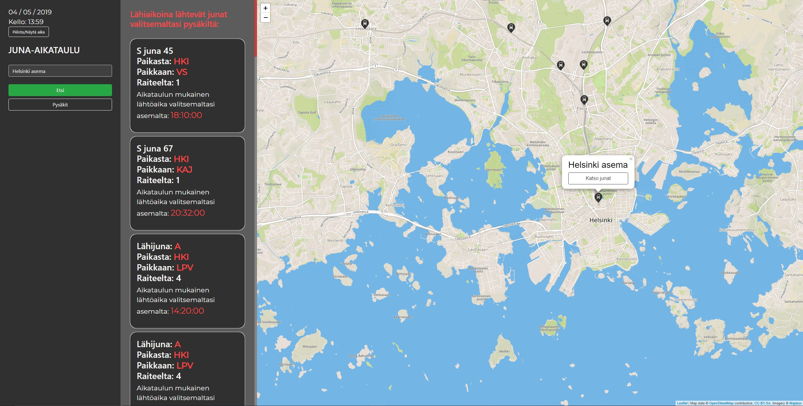

Team projects

WEB-APP
Train schedule
Stacks used JavaScript, HTML, CSS, REST API
Frameworks used: jQuery
In this project we created a web-app which lets users select any
train station in Finland and see selected stations and which
trains are departing in near future.
https://github.com/federaljules/Train_JavaScript
http://1800705.azurewebsites.net/Train_JavaScript/